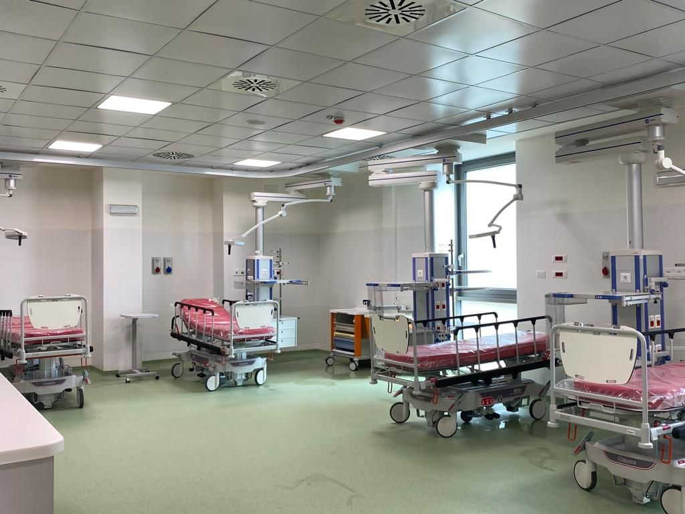
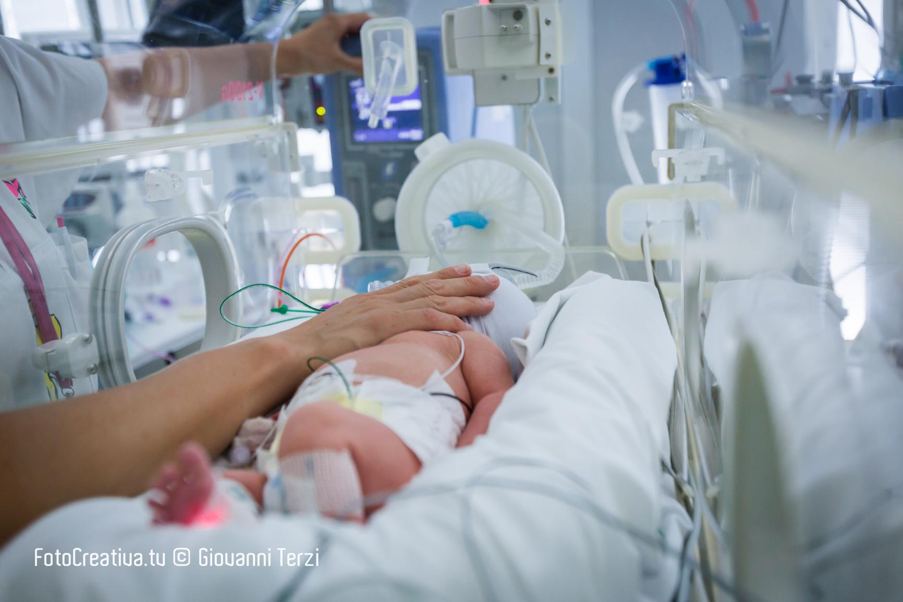
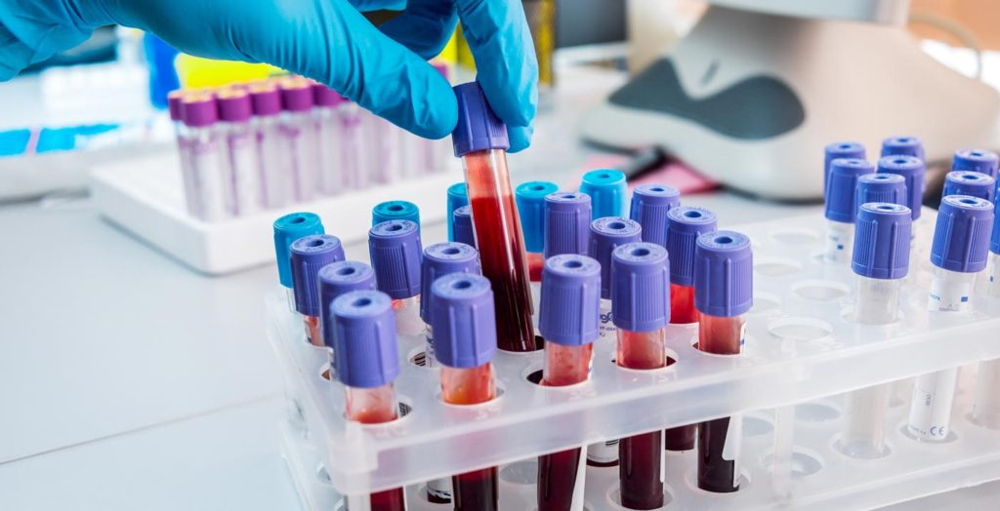

30-01-2024
01
Blocco Operatorio e Riabilitazione
Osservazione di interventi chirurgici (cataratta, laser corde vocali, colon). Incontro con Dietisti e Fisioterapisti per la multidisciplinarietà nel recupero del paziente.

01-02-2024
02
Area Materno-Infantile
Visita ai reparti di Ostetricia e Terapia Intensiva Neonatale. Analisi del supporto tecnologico per i neonati prematuri e dei protocolli del Nido.

02-02-2024
03
Laboratorio Analisi e Automazione
Focus su biochimica, microbiologia e analisi cliniche. Osservazione dei processi di citologia e istologia presso l'Anatomia Patologica.